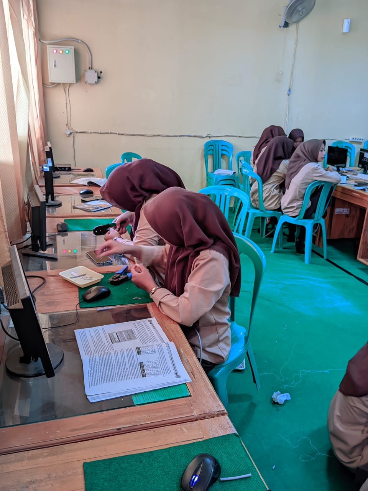

Content
Di SMK NU Islamiyah Kramat memiliki 3 jurusan yaitu Teknik Komputer Jaringan (TKJ), Teknik Kendaraan Ringan (TKR), dan Akuntansi.
Teknik Otomotif

Mencetak Tenaga Kerja Menengah yang profesional, kompeten, dan berakhlakul karimah.
SMK NU 1 Islamiyah Kramat tahun 1998 dengan Izin Operasional No. 0844/103.08/MN/98 Tanggal 01 Juni 1998. Dipimpin oleh Dra. Hj. Fatikha, M.M.. Pada awal berdirinya SMK NU 1 Islamiyah Kramat membuka 2 Jurusan yaitu Program Keahlian Akuntansi dan Sekretaris, pada Tahun Pelajaran 1998/1999. Pada saat itu baru menerima 4 rombongan belajar. Dengan bertambahnya animo masyarakat terhadap SMK NU 1 Islamiyah Kramat, maka pada Tahun Pelajaran 2012/2013 mulai dibuka Program Keahlian Teknik Komputer dan Jaringan. Alhamdulillah di tahun pertama TKJ mendapatkan 2 rombel dan menikat menjadi 3 rombel ditahun-tahun selanjutnya, serta di tahun 2017/2018 membuka program studi Teknik Kendaraan Ringan Otomotif. Sesuai dengan perkembangan dan kebutuhan Dunia Industri. Di tahun pertama mendapatkan 3 rombel. Dan hingga saat ini, jumlah rombel stabil sejumlah 27 rombel setiap tahun ajarannya.
Di SMK NU Islamiyah Kramat memiliki 3 jurusan yaitu Teknik Komputer Jaringan (TKJ), Teknik Kendaraan Ringan (TKR), dan Akuntansi.